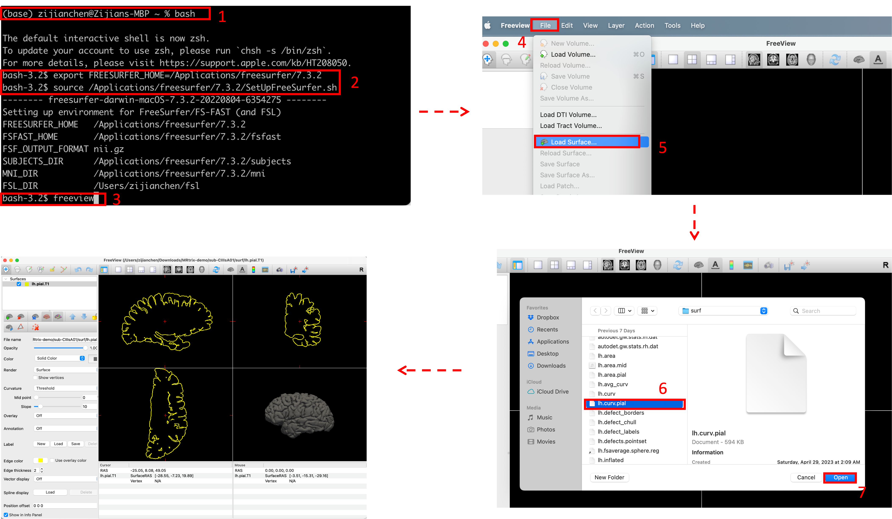
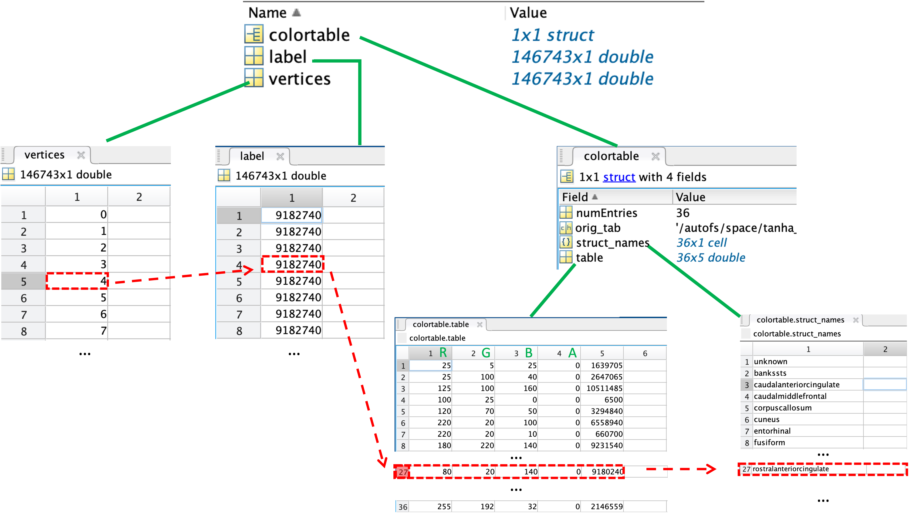
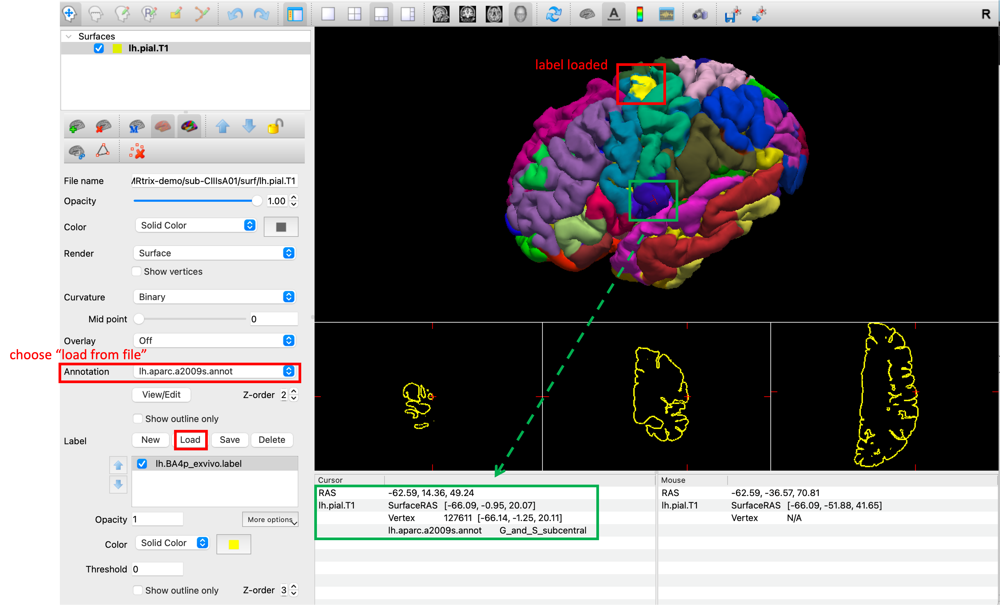

One sentence summary: FreeSurfer reconstructs 2D surfaces (lying in 3D space of course) in triangular mesh format from 3D voxels obtained from T1 weighted images, and provides parcellation and segmentation.
This process is fully automated, just by running
recon-all –i [input T1 file] –subject [subject name/id] –all
which will create a folder in $SUBJECTS_DIR called [subject name/id] that you specified.
The input image has to be a full brain T1 weighted image that has no major problems. The input can be a single:
DICOM file. There may be thousands of such files when they come off the scanner. Use dcmunpack –src /path/to/dicoms and read from the output to locate the MP-RAGE T1 Protocol file. There might still be several hundred (different slices) in that series but you only need one of them and FreeSurfer will find the rest automatically.
Nifti file. (which is simpler)
The recon-all process contains two streams: volume processing and surface processing.
Full list of commands (operations) that are executed by recon -all. See also this official tutorial slides
Intensity Bias/Normalization (output: mri/T1.mgz)
To tackle the problem of outside of image being much brighter than inside (coils), which makes gray/white segmentation difficult.
Skull Strip (output: mri/brainmask.mgz)
Removes all non-brain structures
Automatic Volume Labeling (output: mri/aseg.mgz)
Used to fill in subcortical structures for creating subcortical mass
White matter segmentation (output: mri/wm.mgz)
Separate white matter from everything else.
Subcortical Mass filling (output: mri/filled.mgz)
Fill everything inside the cortical surface and separate hemispheres.
This will make a prototype surface, but is still volume-based
Surface Extraction
orig surface (output: surf/?h.orig.nofix)
white surface (output: surf/?h.white)
Nudge orig surface and adjust the location of vertices following T1 intensity gradients
pial surface (output: surf/?h.pial)
Nudge white surface and adjust the location of vertices following T1 intensity gradients
Computing metrics
Cortical Thickness (Distance between white and pial surfaces) (output: surf/?h.thickness)
Curvature (Circle tangent to surface at each vertex) (output: surf/?h.curv)
Surface-based Area (mean of triangles) (output: surf/?h.area)
Surface-based Volume (area \(\times\) thickness) (output: surf/?h.volume)
Inflation (output: surf/?h.inflated)
minimize metric distortion so that distances and areas are preserved
Nudge vertices with no intensity constraint
Spherical Registration (output: surf/?h.sphere)
Registration to spherical template fsaverge
Automatic Cortical Parcellation (output: label/?h.aparc.annot)
Map to individual through spherical Reg.
Fine-tune based on individual anatomy
The recon-all process will automatically create a subfolder in your current directory named subjid (pre-specified in the command).
/current directory ├── T1W.nii ├── subjid │ ├── label | | ├── aparc.annot.a2009s.ctab | | └── ... | ├── mri | | ├── antsdn.brain.mgz | | └── ... | ├── surf | | ├── lh.area | | └── ... | └── ... └── ...
This folder ./mri contains output files from the first stream (volume processing).
This folder ./mri contains output files from the second stream (surface processing).
To view all these files, use the Freeview GUI. Caution: it happens on my laptop (Apple M1 Pro, macOS 13.0) that if you open the GUI from launchpad and try to load the files, the software will crash and quit unexpectedly.
One way to solve this is to use the terminal and enter bash, then type in the following code to open:
export FREESURFER_HOME=/Applications/freesurfer/7.3.2 source /Applications/freesurfer/7.3.2/SetUpFreeSurfer.sh freeview
Please do note that some other issues include using an external monitor to open. It is suggested to first open it in the internal monitor and then drag back to the external one.
|  |
This folder ./label contains the parcellation information. Three major file formats are .ctab, .annot and .label.
.label files contains a list of vertices (with corresponding spatial positions using RAS coordinates) which are part of the region (that has the same name as the file name). Thus, a label file corresponds only to a single label. There are 5 columns in total, representing “vertex index”, “R coord”, “A coord”, “S coord”, and “value” (often all set as zero, not clear what this column is used for). For example, the first few lines from /label/aparc.annot.a2009s.ctab are
#!ascii label , from subject vox2ras=TkReg 139547 0 -4.883 -92.608 2.234 0.0000000000 1 -5.552 -92.572 2.070 0.0000000000
.ctab is referred to as “color table”. It stores the RGB and transparency value of each region. There are 6 columns in total, representing “label index”, “caption”, “R”, “G”, “B” and “transparency”. For example, the first two lines from /label/lh.cortex.label are
0 Unknown 0 0 0 0 1 G_and_S_frontomargin 23 220 60 0
By default, there are 4 (or 5) such color table files, corresponding to different atlases:
Desikan-Killiany Atlas. The naming convention is aparc.annot
Destrieux Atlas. The naming convention is aparc.annot.a2009s (since it's from 2009-07-28)
DKT Atlas. The naming convention is aparc.annot.DKTatlas
Brodmann Area Maps. The naming convention is BA_exvivo (and BA_exvivo.thresh)
.annot is referred to as “annotation”. It can be seen as a combination (and bridge) of label files, along with a color table, i.e., it contains information about “which vertex (selected from the whole list) belongs to which region and what color should this region be” (instead of “this region contains these vertices” in .label files).
Since there are many atlases (ways of parcellations), we need one annotation for each atlas. It is basically as in .ctab files, but is more finer:
Left and right hemispheres have different files, marked by “lh” and “rh” in the front of the file name.
In addition to the four basic Atlas mentioned above (where it divides BA into some sub-categories), it also contains ventral posterior lateral nucleus (VPNL) of the thalamus using Multi-parametric mapping (mpm). The information is stored in /label/?h.mpm.vpnl.annot.
This file cannot be opened by TextEdit. Instead, you need to use the read_annotation.m function in MATLAB (can be found in $FREESURFER_HOME/matlab or download from this link):
[vertices,label,colortable]=read_annotation('rh.aparc.annot');
Here vertices is the vertex number (ranging from 1 to approximately 150k, this number is the same across all .annot files for one subject). If the corresponding label (a number) is ’9182740’, then find that number in the colortable.table structure, and its label name is that same index in the colortable.struct_name structure (in this example, ’9182740’ is 'rostralanteriorcingulate’).
|  |
An easier way to view these files is to use freeview.
|  |